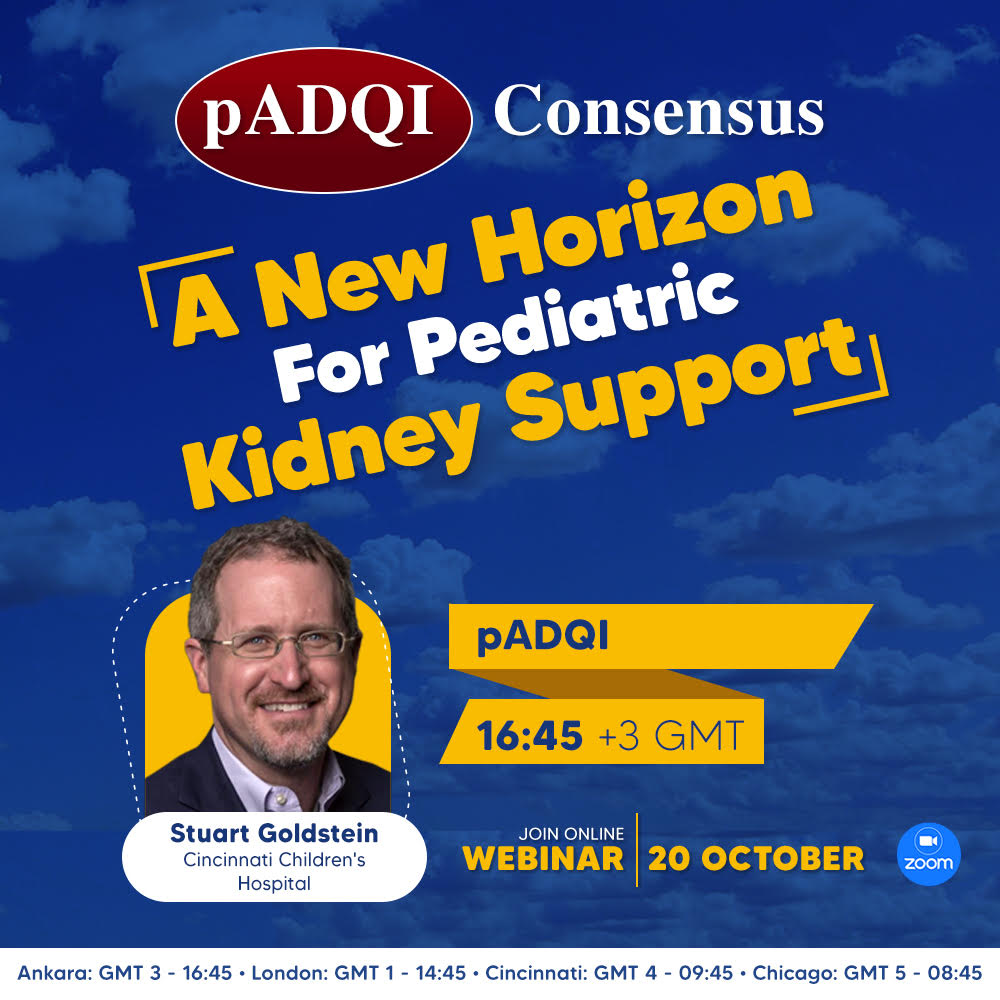
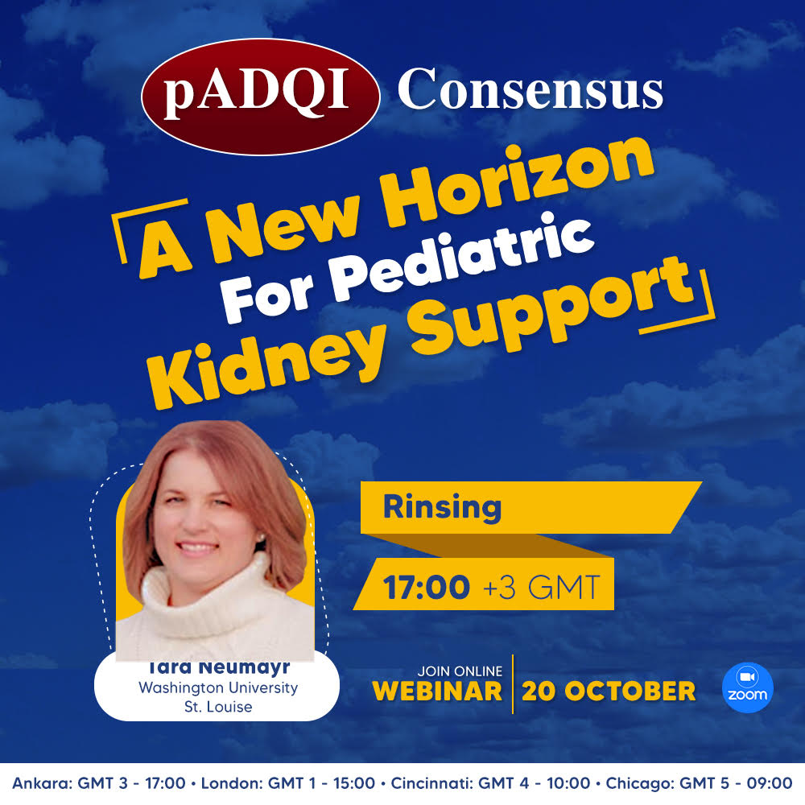

Free Access:
A New Horizon For Pediatric Kidney Support
Time:
- Ankara (GMT + 3) : 16:30 - 17:15
- London (GMT + 1) : 14:30 - 15:15
- Cincinnati (GMT - 4) : 09:30 - 10:15 am
- Chicago (GMT - 5) : 08:30 - 09:15 am

Dr Marlies Ostermann is a consultant in critical care and nephrology at Guy's and St Thomas' NHS Foundation Trust and an Honorary Reader at King's College London.
Biography
Stuart L Goldstein, MD, is Professor of Pediatrics and Director, Center for Acute Care Nephrology at Cincinnati Children's Hospital Medical Center.
Biography
Dr. Tara M. Neumayr is an Assistant Professor in the Divisions of Pediatric Critical Care Medicine and Pediatric Nephrology at the Washington University School of Medicine. Dr. Neumayr works as an attending physician in the Pediatric Cardiac Intensive Care Unit as well as on the Pediatric Nephrology in-patient and consulting services. Dr. Neumayr earned her Bachelor of Arts degree with Honors in English at Duke University before returning to her home state of South Dakota to attend the University of South Dakota School of Medicine, where she earned her medical degree.
Following her pediatric residency at the Mayo Clinic Graduate School of Medicine in Rochester, MN, Dr. Neumayr completed fellowship training in both Pediatric Critical Care Medicine and Pediatric Nephrology at the Washington University School of Medicine. She joined the faculty after her graduation in 2011 and completed an additional year of training in Pediatric Cardiac Critical Care. Her clinical and research interests explore the relationships between Acute Kidney Injury and critical illness in infants and children. Dr. Neumayr is board certified in Pediatrics, Pediatric Critical Care Medicine, and Pediatric Nephrology. Curriculum Vitae
Following her pediatric residency at the Mayo Clinic Graduate School of Medicine in Rochester, MN, Dr. Neumayr completed fellowship training in both Pediatric Critical Care Medicine and Pediatric Nephrology at the Washington University School of Medicine. She joined the faculty after her graduation in 2011 and completed an additional year of training in Pediatric Cardiac Critical Care. Her clinical and research interests explore the relationships between Acute Kidney Injury and critical illness in infants and children. Dr. Neumayr is board certified in Pediatrics, Pediatric Critical Care Medicine, and Pediatric Nephrology. Curriculum Vitae


